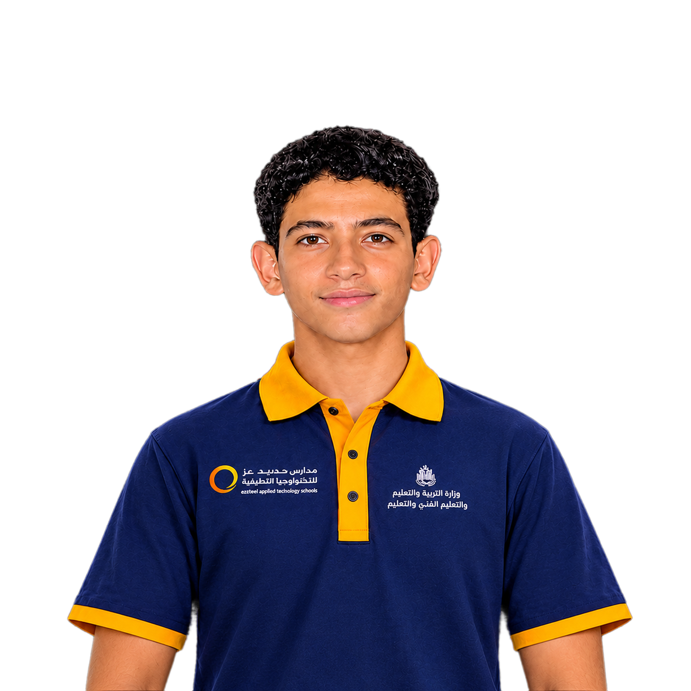
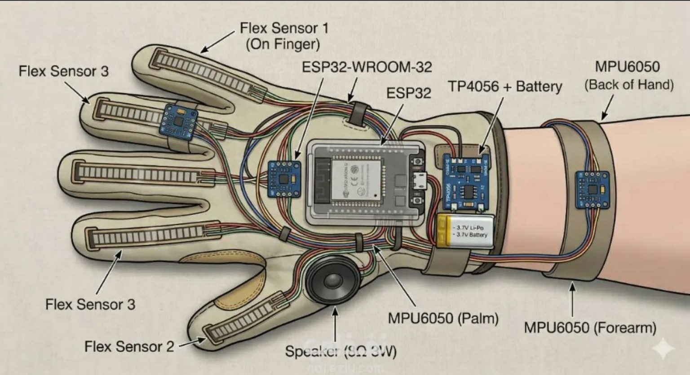
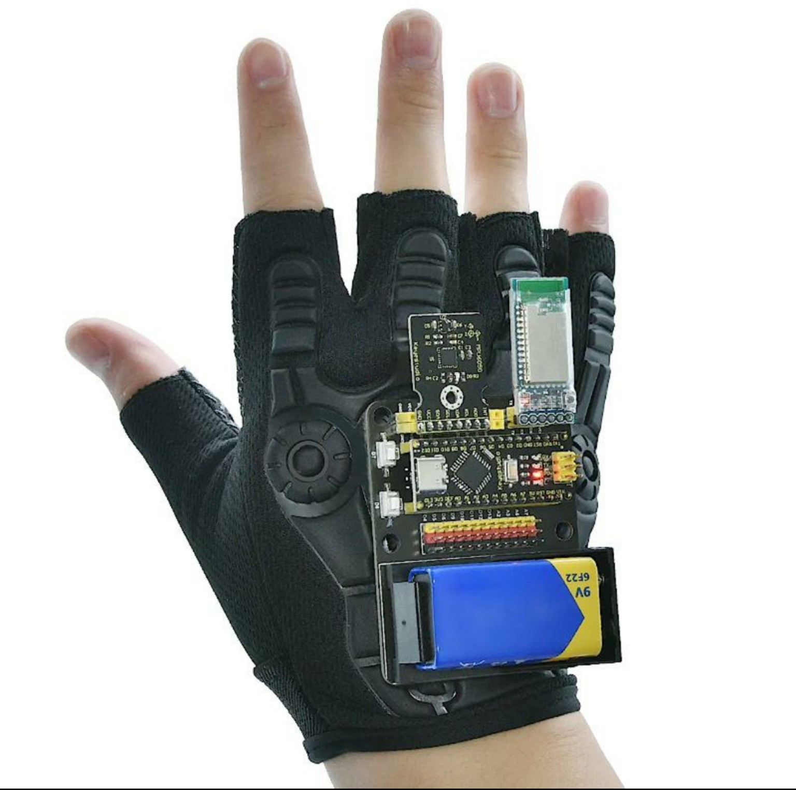

↔
حاجز التواصل
عدم معرفة الطرف الآخر بلغة الإشارة قد يجعل توصيل الاحتياجات اليومية أمرا صعبا ويزيد الاعتماد على وسيط.

MAROSMART SIGN GLOVE جرّب الاتصالقفاز ذكي تجريبي يلتقط انحناء الأصابع واتجاه اليد، ثم يحوّل الإشارات التي تم تدريب النظام عليها إلى كلمات مكتوبة وصوت مسموع.
الدقة العلمية: النسخة الحالية نموذج أولي قابل للتدريب على إشارات ثابتة محددة. ليست مترجما كاملا أو معتمدا للغة الإشارة المصرية، ولا تتضمن حاليا نموذجا للذكاء الاصطناعي مدربا.
قد يواجه الصم وضعاف السمع أو غير الناطقين صعوبة في التواصل مع أشخاص لا يعرفون لغة الإشارة. يعتمد المشروع على قفاز إلكتروني يقرأ حركات الأصابع واتجاه اليد، ويتعرف على مجموعة إشارات تم تسجيلها وتدريبها مسبقا.
عند التعرف على إشارة مسجلة، يعرض النظام معناها على شاشة صغيرة ويشغّل ملفا صوتيا مرتبطا بها، لتسهيل التواصل في المواقف اليومية.
عدم معرفة الطرف الآخر بلغة الإشارة قد يجعل توصيل الاحتياجات اليومية أمرا صعبا ويزيد الاعتماد على وسيط.
حساسات تقيس انحناء الأصابع ووحدة حركة تلتقط اتجاه اليد، ثم يعالج ESP32 البيانات ويعرض النص ويشغّل الصوت.
تتوزع المكونات بين الاستشعار والمعالجة والعرض وإخراج الصوت والطاقة.
المتحكم الرئيسي؛ يقرأ الحساسات ويعالج القيم وينفذ منطق التعرف.
المعالجة والتحكمخمسة حساسات، واحد لكل إصبع، لقياس مقدار الانحناء.
الاستشعارتقيس التسارع والدوران للمساعدة في تحديد اتجاه اليد وحركتها.
استشعار الحركةتعرض حالة النظام واسم الإشارة التي تم التعرف عليها.
عرض النصيشغّل ملفات MP3 مسجلة مسبقا مرتبطة بالإشارات.
الإخراج الصوتيمنظومة طاقة محمولة مع شحن خلية واحدة وتنظيم الجهد المناسب.
الطاقة


تسلسل مبسط لرحلة الإشارة داخل النظام.
المستخدم يشكل إشارة بيده.
قياس انحناء الأصابع واتجاه اليد.
ESP32 يقارن القراءات بالقوالب المدربة.
إظهار الكلمة على شاشة OLED.
تشغيل ملف MP3 الموافق للإشارة.
تجربة اختيارية عبر USB Serial لقراءة الرسائل التي يرسلها ESP32.
استخدم متصفح Chrome أو Edge على كمبيوتر يدعم Web Serial، ثم وصل لوحة ESP32 بكابل USB بيانات واضغط اتصال.
التحقق من دعم Web Serial...
بانتظار الاتصال...
ستظهر هنا الرسائل الفعلية القادمة من لوحة ESP32.
بديل تجريبي يستخدم كاميرا الجهاز ونموذج MediaPipe لرصد اليد، يمكنك من تدريب النظام على إشاراتك ثم تكرارها ليُنطقها فوراً دون الحاجة للقفاز الفعلي.
اضغط على زر "تشغيل الكاميرا" للبدء
* قم بعمل الإشارة أمام الكاميرا ثم اضغط "بدء التدريب". سيتم تسجيل 30 عينة تلقائياً.
أجب عن الأسئلة ثم اعرف نتيجتك مع شرح الإجابات.
التطوير العلمي يبدأ بالبيانات والاختبار، ثم ينتقل تدريجيا إلى الذكاء الاصطناعي.
قراءة خمسة حساسات ومعايرة وتدريب قوالب ثابتة وعرض نص وصوت.
مرحلة النموذج الحاليجمع عينات متعددة لكل إشارة ومن عدة مستخدمين وقياس الدقة والأخطاء.
تحليل سلسلة زمنية من بيانات Flex وMPU6050 للتعرف على الإشارات الحركية.
اتصال BLE أو Wi-Fi لعرض النصوص وتشغيل النطق وحفظ سجل الإشارات.
تجربة KNN أو Random Forest ثم نموذج صغير على المتحكم عند ملاءمة البيانات والعتاد.
نجمع بيانات حقيقية بموافقة المشاركين، ونضع تسميات صحيحة بالتعاون مع مستخدمي لغة الإشارة المصرية، ثم ندرب ونختبر النموذج على بيانات منفصلة. المساعد اللغوي يأتي بعد التعرف الموثوق على الإشارة، ولا يخمن معنى قراءات الحساسات الخام.
يمكنك مراجعة الكود والوثائق الهندسية وتحميلها من مستودع GitHub.
MARO Smart Sign Glove
مشروع تعليمي وبحثي قابل للتطوير والاختبار